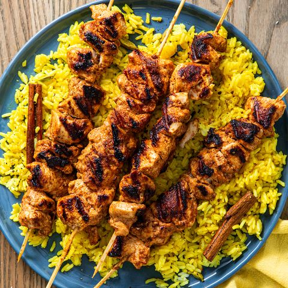

FOOD GALLARY

Samosa
A samosa is a South Asian fried or baked pastry with a savory filling like spiced potatoes, onions, peas, chicken and other meats, or lentils. It may take different forms, including triangular, cone, or half-moon shapes, depending on the region.

Biryani
Biryani is a mixed rice dish originating among the Muslims of the Indian subcontinent. It is made with Indian spices, rice, and meat usually that of chicken, goat, lamb, prawn, fish, and sometimes, in addition, eggs or vegetables such as potatoes in certain regional varieties.

Chicken Tikka
Chicken tikka is a chicken dish originating in the Indian subcontinent; the dish is popular in India, Bangladesh and Pakistan.